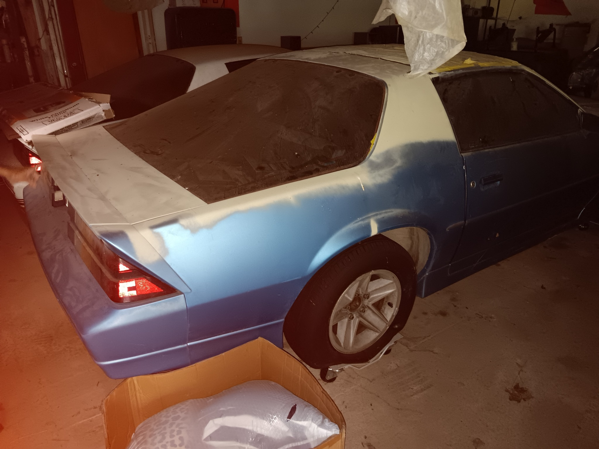

ESTATE SALE — BOTH CARS AS IS — MAKE AN OFFER ON THE PAIR
About the cars
These two 1978 Chevrolet Camaros were reportedly in running condition when brought from California to Ohio. Both have been stored in a barn since. One of the two was considered a parts car.
The current engine, transmission, drivetrain, mechanical and running conditions have not been verified. Both vehicles are offered together in their present condition, as shown.
Original barn photographs
1978 model years are seller-reported and should be confirmed by identification numbers. Photos show the cars in storage; no mechanical inspection or roadworthiness is represented.